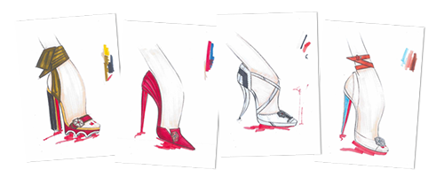
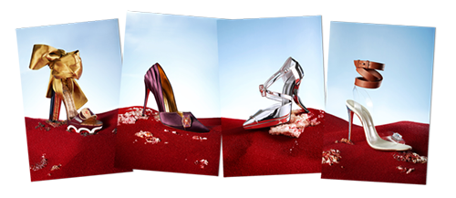
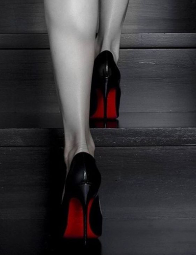

Christian Louboutin(born 7 January 1964) is a French fashion designer whose high-end stiletto footwear incorporates shiny, red-lacquered soles that have become his signature. Initially a freelance designer for fashion houses, he started his own shoe salon in Paris, with his shoes finding favor with celebrity clientele. He has partnered with other organizations for creative projects including limited edition pieces, gallery exhibits, and even a custom bar. His company has since branched out into men's footwear, handbags, fragrances and makeup.
Early life
Louboutin was born and raised in Paris's 12th arrondissement. He was the only son of Roger, a cabinet-maker, and Irene, a homemaker, both French, from Brittany. He has three sisters. Louboutin said in a 2012 interview that he was "much darker-skinned than everyone else in his family. You know, I felt I wasn't French. My family was very French and so I decided they had probably adopted me. But instead of feeling it was terrible and that I was an outsider who had to go and find my real family, I invented my own history, full of characters from Egypt because I was very into the pharaohs." He incidentally discovered, following a revelation by one of his sisters in 2014 that his biological father was in fact an Egyptian, with whom his mother Irene had been having a secret affair.

Louboutin was expelled from school three times and then decided to run away from home at the age of 12, at which point his mother allowed him to move out to live at a friend's house. He faced much opposition when he decided to drop out from school. However, he claims that what helped him make up his mind was an interview on TV with Sophia Loren, in which she introduced her sister, saying she had to leave school when she was only 12, but when she turned 50, she got her degree. He later remarked, "Everybody applauded! And I thought, 'Well, at least if I regret it I'm going to be like the sister of Sophia Loren!'"
Career
Louboutin began sketching shoes in his early teens, ignoring his academic studies. Going through a punk phase, he was in a few films, including 1979 cult classic Race d'ep and The Homosexual Century, which attracted an English-language audience. His first job was at the Folies Bergères, the cabaret where he assisted the entertainers backstage. He was also a fixture on the city's party scene, clubbing his nights away alongside Mick Jagger and Andy Warhol. His little formal training included drawing and the decorative arts at the Académie d'Art Roederer. Louboutin claims his fascination with shoes began in 1976, when he visited the Musée national des Arts d'Afrique et d'Océanie on the avenue Daumesnil. It was there that he saw a sign from Africa forbidding women wearing sharp stilettos from entering a building for fear of damage to the extensive wood flooring. This image stayed in his mind, and he later used this idea in his designs. "I wanted to defy that," Louboutin said. "I wanted to create something that broke rules and made women feel confident and empowered."
Fascinated by world cultures, he ran away in his teens to Egypt and spent a year in India. Louboutin returned to Paris in 1981, where he assembled a portfolio of drawings of elaborate high heels. He brought it to the top couture houses. The effort resulted in employment with Charles Jourdan. Subsequently, Louboutin met Roger Vivier, who claims to have invented the stiletto, or spiked-heel shoe. Louboutin became an apprentice in Vivier's atelier. Going on to serve as a freelance designer, Louboutin designed women's shoes for Chanel, Yves Saint Laurent, and Maud Frizon. In the late 1980s, he turned away from fashion to become a landscape gardener and to contribute to Vogue but missed working with shoes and set up his company in 1991.
With funds from two backers, he opened a Paris shoe salon in 1991 with Princess Caroline of Monaco as his first customer. She complimented the store one day when a fashion journalist was present, and the journalist's subsequent publication of Princess' comments helped greatly to increase Louboutin's renown. Clients such as Diane von Fürstenberg and Catherine Deneuve followed. Later, those interested in his stiletto heels have included Christina Aguilera, Shirley Coates, Joan Collins, Jennifer Lopez, Madonna, Tina Turner, Marion Cotillard, Nicki Minaj, Gwyneth Paltrow, and Blake Lively. Sarah Jessica Parker wore a pair of shoes by Louboutin for her wedding. Britney Spears wears a pair of high-heeled Louboutins in her music video "If U Seek Amy" that were not available for sale until a month after the video was released. Louboutin has topped the Luxury Institute's annual Luxury Brand Status Index (LBSI) for three years; the brand's offerings were declared the Most Prestigious Women's Shoes in 2007, 2008, and 2009. By 2011, Louboutin became the most searched-for shoe brand online.
Shoes
An example of Louboutin's signature red-bottoms. Louboutin helped bring stilettos back into fashion in the 1990s and 2000s, designing dozens of styles with heel heights of 120 mm (4.72 inches) and higher. The designer's professed goal has been to "make a woman look sexy, beautiful, to make her legs look as long as he can". While he does offer some lower-heeled styles, Louboutin is generally associated with his dressier evening-wear designs incorporating jeweled straps, bows, feathers, patent leather, red soles, and other similar decorative touches. He is most popularly known for the red leather soles on his high heel shoes, commonly referred to as "sammy red soled shoes".
His signature red soles were first created in 1993. “My sketches were not reproduced exactly as I had designed them and I couldn’t figure out why. The two dimensional sketch was so powerful on paper, but when turned into a three-dimensional object, it was somehow lacking energy. Frustrated after having tried different things to liven up the design, I spontaneously grabbed my assistant’s red nail polish and painted the sole. I instantly knew that this would be a success!”. Christian Louboutin's red-bottom colour code is Pantone 18-1663 TPX. His single biggest client is American novelist Danielle Steel, who is reputed to own over 6,000 pairs and is known to have purchased up to 80 pairs at a time when shopping at his stores.
The red sole is protected as a trademark in several countries, and litigation has taken place in various disputes in which Louboutin claimed infringement of its rights. Litigation generally also involved discussion of the validity or the scope of protection of the trademark.